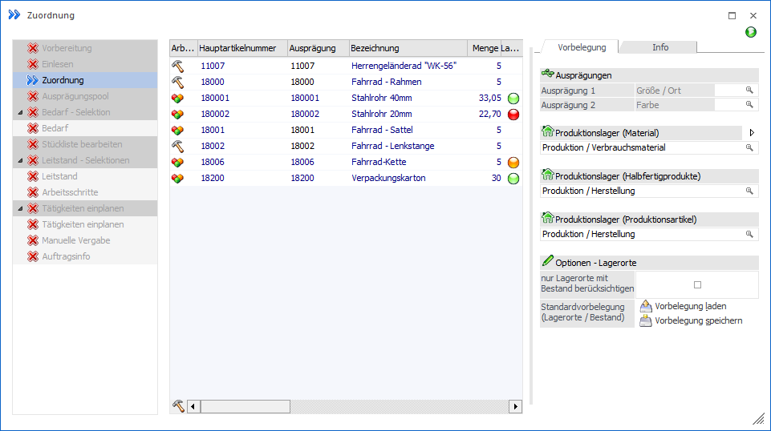
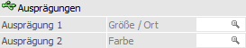
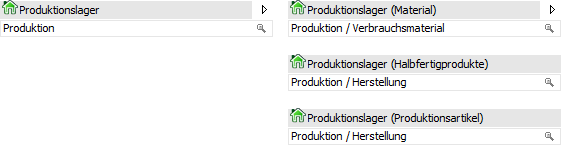
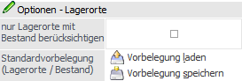
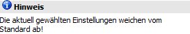

Im Register "Vorbelegung" der Zuordnung können diverse Vorgaben für das Ausprägen und die Zuweisung von Lagerorten getätigt werden.
Hinweis
Die Register "Vorbelegung" und Info können mit Hilfe der Buttons  und
und  , welche sich im rechten oberen Bereich des
Fensters befinden, ein- bzw. ausgeblendet werden.
, welche sich im rechten oberen Bereich des
Fensters befinden, ein- bzw. ausgeblendet werden.

Folgende Eingabefelder, Einstellungen und Information stehen zur Verfügung:
Ausprägungen

Ø Ausprägung 1 / Ausprägung 2
An dieser Stelle kann pro Ausprägungsgruppe (hier "Größe/Ort" und "Farbe") eine Ausprägung angegeben werden. Diese Vorbelegung wird beim Bestätigen der Eingabe direkt in die unausgeprägten Ausprägungszeilen übernommen.
Hinweis
Die jeweilige Ausprägung wird nur bei Artikeln zugeordnet, bei denen auch die Ausprägungsgruppe angelegt ist und bisher noch keine Ausprägung gewählt wurde.
Produktionslager

An dieser Stelle kann eine Lagerortvorbelegung für den aktuellen Produktionsauftrag erfolgen. Hierbei wird zwischen dem normalen Modus und dem Expertenmodus unterschieden, wobei zwischen den Modi mit Hilfe des Icons jederzeit gewechselt werden kann.
Hinweis
Die Vorbelegung besteht aus den Orten und der Option "nur Lagerorte mit Bestand berücksichtigten" und kann mit Hilfe der Buttons "Vorbelegung laden" und "Vorbelegung speichern" benutzerspezifisch gespeichert bzw. geladen werden.
Ø Lagerort (normale Modus)
Bei Anwahl des Buttons "Lagerorte ohne Auswahl aufteilen" wird der hier hinterlegte Ort für die automatische Lagerortaufteilung genutzt, wobei alle Bestandteile des Auftrags (Material / Komponenten, Halbfertigprodukte und Produktionsartikel / Fertigprodukte) den gleichen Lagerort bzw. Lagerortbereich verwenden. Der Ort wird direkt im Produktionsauftrag gespeichert und muss nicht der letzten Hierarchie-Ebene entsprechen.
Hinweis
Der Lagerort wird (neben der Zuordnung) auch im Fenster "Lagerorte erfassen" als Vorgabe verwendet.
Ø Material / Halbfertigprodukt / Produktionsartikel (Expertenmodus)
Im Expertenmodus kann pro Bestandteil eines Auftrags (Material / Komponenten, Halbfertigprodukte und Produktionsartikel / Fertigprodukte) ein eigener Lagerort bzw. Lagerortbereich vorgeben werden, wobei diese Informationen direkt im Produktionsauftrag gespeichert werden. Die Vorgabe selber wird in weiterer Folge bei Anwahl des Buttons "Lagerorte ohne Auswahl aufteilen" verwendet. Die Orte müssen dabei nicht der letzten Hierarchie-Ebene entsprechen.
Hinweis
Die Lagerorte werden (neben der Zuordnung) auch im Fenster "Lagerorte erfassen" als Vorgabe verwendet.
Optionen - Lagerorte

Ø nur Lagerorte mit Bestand berücksichtigten
Mit Hilfe dieser Option kann gesteuert werden, ob bei Anwahl des Buttons "Lagerorte ohne Auswahl aufteilen" (bei Verbrauchsmaterial) nur jene Orte verwendet werden sollen, welche aktuell einen Bestand aufweisen.
Hinweis
Im Gegensatz zu einer Lagerortvorgabe wird die gewählte Einstellung nicht pro Produktionsauftrags gespeichert!
Ø Standardvorbelegung (Lagerorte / Bestand)
Mit Hilfe der Buttons "Vorbelegung laden" und "Vorbelegung speichern" kann die aktuelle Lagerortvorgabe, sowie die Option "nur Lagerorte mit Bestand berücksichtigten", benutzerspezifisch geladen bzw. gespeichert werden.
Hinweis
Weichen die aktuellen Einstellungen vom Standard ab, so wird hierauf wie folgt hingewiesen:
